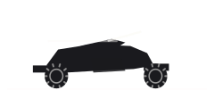

Pickups et tout-terrain
Dinka Verus
Dinka Verus dans GTA VI : pickups et tout-terrain. Inspiration : Polaris Sportsman MV850. Vu dans un support officiel, sans nom communiqué.
Illustration provisoire : les visuels officiels restent à intégrer à cette fiche.
Ce que montrent les visuels
Quad tout-terrain, châssis tubulaire et pneus larges. Le véhicule des pistes sablonneuses et des zones où aucune voiture ne passe.
Fiche de route
Dinka Verus appartient à la catégorie pickups et tout-terrain du catalogue. Aperçu officiellement, nommé par déduction : cette fiche garde le nom le plus probable et le changera dès que Rockstar en publiera un. Il est visible sur une ou plusieurs captures de la galerie officielle de rockstargames.com.
Cette fiche se complétera avec le jeu : prix d’achat, performances mesurées, concessions où le trouver, options chez Rideout Customs.
Le rapprochement réel
Le rapprochement retenu pour ce véhicule est Polaris Sportsman MV850. Le studio ne dépose aucune licence et ne nomme aucune référence. Ce rapprochement est une déduction tirée des images.
Sa place dans un GTA
La catégorie pick-up et tout-terrain rassemble les camionnettes de travail et leurs versions préparées pour la boue et le sable.
Identité
| Modèle | Verus |
|---|---|
| Constructeur | Dinka |
| Statut | Vu dans un support officiel |
| Catégorie | Pickups et tout-terrain |
| Inspiration réelle | Polaris Sportsman MV850 (rapprochement communautaire) |
| Source | Captures officielles |
Fiche documentaire
Ce qui n’est pas encore publié garde son état : rien n’est inventé, et les coûts d’usage ne sont pas des mécaniques confirmées.
L’obtenir
- Prix
- Prix à venir
- Achetable
- Achat à confirmer
- Comment l’obtenir
- Obtention à confirmer
- Où le trouver
- Emplacement à venir
Performances
- Accélération
- À confirmer
- Vitesse maximale
- À confirmerUne vitesse maximale n’est pas une vitesse de trajet.
- Freinage
- À confirmer
- Tenue de route
- À confirmer
Capacités
- Places
- À confirmer
- Terrain
- routeEstiméDéduit du type de véhicule (catégorie du site), pas d’une fiche technique.
- Chargement
- À confirmer
Coûts d’usage
- Carburant
- Carburant : mécanique non confirméeUne jauge vue dans une bande-annonce ne prouve ni un prix, ni une consommation, ni un coût d’usage.
- Entretien
- Entretien : mécanique non confirméeAucun coût d’entretien de véhicule n’est annoncé pour GTA VI.
- Réparations
- Réparations : mécanique non confirméeLes réparations payantes de GTA V ne prouvent rien pour GTA VI.
- Assurance
- Assurance : mécanique non confirméeAucune assurance de véhicule n’est annoncée pour GTA VI.
- Revente
- Revente : mécanique non confirméeUne revente compte seulement si elle est possible et si son prix est connu ou choisi comme hypothèse. Elle ne réduit jamais l’argent à payer aujourd’hui.
Sur la carte de Leonida
Vendeurs, atelier et circuit sont déjà cartographiés. Le détail des apparitions par véhicule suivra le lancement.

Pickups et tout-terrain
Verus
Où le trouver : Emplacement à venir
Lieux liés aux pickups et tout-terrain sur notre carte (pas un emplacement confirmé pour ce véhicule) : Vapid Dealership, Baller Dealership, Marlin Motors, Status Auto Resort, Rideout Customs, Chip’s Body Shop, Watkins Auto Parts.
Lieux liés sur notre carte
- Vapid DealershipConcessions · SouthsideVoir sur la carte
- Baller DealershipConcessions · SouthsideVoir sur la carte
- Marlin MotorsConcessions · SouthsideVoir sur la carte
- Status Auto ResortConcessions · CrosstownVoir sur la carte
- Rideout CustomsAteliers · CrosstownVoir sur la carte
- Chip’s Body ShopAteliers · Key LentoVoir sur la carte
- Watkins Auto PartsAteliers · Port GellhornVoir sur la carte
Une erreur sur cette fiche ? Chaque modèle réel cité est une déduction tirée des images officielles. Le studio ne confirme rien, et nous n’exploitons aucun contenu volé. Si tu as une correction, la page Contact est là pour ça.